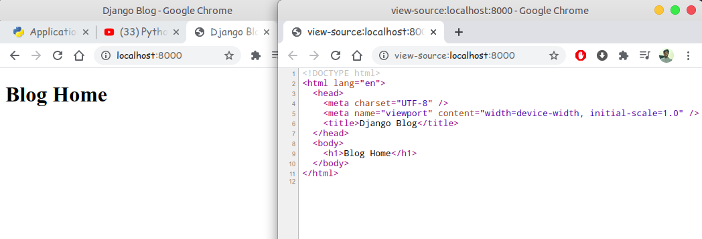

```zsh root@admin: ~$ python -m django --version 3.1 root@admin: ~$ django-admin Available subcommands:
[django] check compilemessages createcachetable dbshell diffsettings dumpdata flush inspectdb loaddata makemessages makemigrations migrate runserver sendtestemail shell showmigrations sqlflush sqlmigrate sqlsequencereset squashmigrations startapp startproject test testserver
root@admin: ~$ django-admin startproject django_project root@admin: ~$ cd django_project root@admin: ~$ ls django_project manage.py root@admin: ~$ tree . ├── django_project │ ├── asgi.py │ ├── init.py │ ├── settings.py │ ├── urls.py │ └── wsgi.py └── manage.py ```
django_project/ root directory is a container for your project. Its name doesn’t matter to Django; you can rename it to anything you like.manage.py: A command-line utility that lets you interact with this Django project in various ways. You can read all the details about manage.py in django-admin and manage.py.django_project/ directory is the actual Python package for your project. Its name is the Python package name you’ll need to use to import anything inside it (e.g. django_project.urls).django_project/__init__.py: An empty file that tells Python that this directory should be considered a Python package. If you’re a Python beginner, read more about packages in the official Python docs.django_project/settings.py: Settings/configuration for this Django project. Django settings will tell you all about how settings work.django_project/urls.py: The URL declarations for this Django project; a “table of contents” of your Django-powered site. You can read more about URLs in URL dispatcher.django_project/asgi.py: An entry-point for ASGI-compatible web servers to serve your project. See How to deploy with ASGI for more details.django_project/wsgi.py: An entry-point for WSGI-compatible web servers to serve your project. See How to deploy with WSGI for more details.Now we run our very basic django_project from terminal
console
root@admin: ~$ ls
django_project manage.py
root@admin: ~$ python manage.py runserver
Preview your basic django website:
First Create our Django application using startapp subcommands
console
root@admin: ~$ django-admin startapp blog
root@admin: ~$ tree
.
├── blog
│ ├── admin.py
│ ├── apps.py
│ ├── __init__.py
│ ├── migrations
│ │ └── __init__.py
│ ├── models.py
│ ├── tests.py
│ └── views.py
├── db.sqlite3
├── django_project
│ ├── asgi.py
│ ├── __init__.py
│ ├── settings.py
│ ├── urls.py
│ └── wsgi.py
└── manage.py
Now open up my views.py file and write some code into it.
blog/views.py:
```py from django.shortcuts import render from django.http import HttpResponse
def home(request): return HttpResponse('
Then create new python file urls.py inside blog apps.
console
root@admin: ~$ cd blog
root@admin: ~$ ls
__init__.py admin.py apps.py migrations models.py tests.py views.py
root@admin: ~$ touch urls.py
root@admin: ~$ ls
__init__.py admin.py apps.py migrations models.py tests.py urls.py views.py
blog/urls.py:
```py from django.urls import path from . import views
urlpatterns = [ # path(route, view, kwargs=None, name=None) path('', views.home, name='blog-home'), ] ```
Now edit our django_project/urls.py for url mapping with blog app urls.py
django_project/urls.py:
```py from django.contrib import admin from django.urls import path from django.urls import include
urlpatterns = [ path('admin/', admin.site.urls), path('blog/',include('blog.urls')) ] ```
Now open our terminal and run our development server.
```console root@admin: ~$ ls blog db.sqlite3 django_project manage.py root@admin: ~$ python manage.py runserver
root@admin: ~$ python manage.py runserver 8080 Watching for file changes with StatReloader Performing system checks...
System check identified no issues (0 silenced).
You have 18 unapplied migration(s). Your project may not work properly ...... Run 'python manage.py migrate' to apply them. December 11, 2020 - 15:17:03 Django version 3.1, using settings 'django_project.settings' Starting development server at http://127.0.0.1:8080/ Quit the server with CONTROL-C. ```
Open a browser and put this url http://127.0.0.1:8080/ into the url box and enter.
main-page: http://127.0.0.1:8080/

blog-home: http://127.0.0.1:8080/blog/

Add another view into the blog app.
blog/views.py:
```py from django.http import HttpResponse
def about(request): return HttpResponse('
Then, add routes for new view.
blog/urls.py:
```py from django.urls import path from . import views
urlpatterns = [ # path(route, view, kwargs=None, name=None) path('', views.home, name='blog-home'), path('about.', views.about, name='blog-about'), ] ```
And then open our terminal and run our development server.
```console root@admin: ~$ python manage.py runserver
Watching for file changes with StatReloader Performing system checks...
System check identified no issues (0 silenced).
You have 18 unapplied migration(s). Your project may not work ......... Run 'python manage.py migrate' to apply them. December 11, 2020 - 15:17:03 Django version 3.1, using settings 'django_project.settings' Starting development server at http://127.0.0.1:8000/ Quit the server with CONTROL-C. ```
Open a browser and put this url http://127.0.0.1:8000/ into the url box and enter.
blog-home: http://127.0.0.1:8000/blog/about/

Now if we make change into our project urls.py like below
django_project/urls.py:
```py from django.contrib import admin from django.urls import path from django.urls import include
urlpatterns = [ path('admin/', admin.site.urls), path('',include('blog.urls')) # empty route ] ```
Now empty route + empty route. We made views.home is our dev-server homepage.
For use templates we are going to create a new folder within the blog app directory create a directory calls templates. By default django looks for a templates subdirectory and each of our installed apps. Inside templates directory we create a subdirectory called blog. Same as apps name.(This is a django convention).
console
root@admin: ~$ pwd
../django_project/blog/
root@admin: ~$ mkdir templates
root@admin: ~$ cd templates
root@admin: ~$ mkdir blog
root@admin: ~$ cd blog
root@admin: ~$ touch about.html home.html # for our two views
root@admin: ~$ cd ./../../
root@admin: ~$ pwd
../django_project/blog/
root@admin: ~$ tree
/templates/
└── blog
├── about.html
└── home.html
Here we create two html files(about.html, home.html) inside blog apps. Now edit it.
blog/templates/blog/home.html:
html
<!DOCTYPE html>
<html lang="en">
<head>
<meta charset="UTF-8" />
<meta name="viewport" content="width=device-width, initial-scale=1.0" />
<title>Django Blog</title>
</head>
<body>
<h1>Blog Home</h1>
</body>
</html>
Now we have our templates ready. we have to add our blog application to our list of installed apps. So that Django knows to look there for a templates directory. To doing that, open settings.py file in project_directory and put the app name into the INSTALLED_APPS list.
django_project/settings.py:
```py .... INSTALLED_APPS = [ 'blog.apps.BlogConfig', 'django.contrib.admin', 'django.contrib.auth', 'django.contrib.contenttypes', 'django.contrib.sessions', 'django.contrib.messages', 'django.contrib.staticfiles', ] ....
""" blog/ apps.py from django.apps import AppConfig class BlogConfig(AppConfig): name = 'blog'
""" ```
Now lets use the templates that we created so that it renders that whenever we navigate to our home page so in order to do that we have to point our blog views to use those templates. So now open up our blog views and and loading and render our templates. There are several way to do that. Here we use django.shortcut -> render method
blog/views.py:
```py
from django.shortcuts import render
def home(request): """ render(request, template_name(str), context=dict())
request: first_arguments
template_name: 'app_name/template_name_that_we_render' # here app name is blog
context: passing information into our template using dictionary. # context is optional
"""
return render(request, 'blog/home.html') # still return an HttpResponse in the background.
```
Note: views always return a HttpResponse or an Exception.
Now check all that's works. Open the terminal and run,
```console root@admin: ~$ ls blog db.sqlite3 django_project manage.py root@admin: ~$ python manage.py runserver 8000 Watching for file changes with StatReloader Performing system checks...
System check identified no issues (0 silenced).
You have 18 unapplied migration(s). Your project may not work properly.... Run 'python manage.py migrate' to apply them. December 12, 2020 - 12:58:52 Django version 3.1, using settings 'django_project.settings' Starting development server at http://127.0.0.1:8000/ Quit the server with CONTROL-C. ```
Open a browser and put this url http://127.0.0.1:8000/ into the url box and enter.

Great all works. But we see the same result that we seen before. Wait...view the page source. Ooh! Here is the source code that we write our home.html files.

Now edit our second views template files about.html.
blog/about.html:
html
<!DOCTYPE html>
<html lang="en">
<head>
<meta charset="UTF-8" />
<meta name="viewport" content="width=device-width, initial-scale=1.0" />
<title>Blog About</title>
</head>
<body>
<h1>Blog About</h1>
</body>
</html>
Next render about.html from our views.py file.
blog/views.py:
py
def about(request):
return render(request, 'blog/about.html')

Now work with third and optional parameter in render() method. Create some fake post for passing into our templates.
```py
posts = [ { 'author': 'Md. Nahid Hassan', 'title': 'Blog Post 1', 'content': 'First Post Content', 'date_posted': 'December 10, 2020' }, { 'author': 'Mehedi Hasan Mahin', 'title': 'Blog Post 2', 'content': 'Second Post Content', 'date_posted': 'December 12, 2020' } ] ```
So lets pretend for now that we made a database call and get back a list of post and we want to display these post on our blog home page. So, we can pass these post into our template just by passing an argument with our data and we will put our data into a dictionary. So within our home view
blog/views.py:
py
def home(request):
context = {
# key is post and value is our list of posts
# pass context=context as third argument and
# then we are access it using key_name into the template
'posts': posts
}
return render(request, 'blog/home.html', context=context)
Now let's switch over to our home.html template so we can see how to use this...
Here we use django_template_engine that allows us to write code here within our templates so to write a for loop. we can open codeblock...
Loop template example:
Demo:
```html {% for something in somethings%} {% endfor %}
{% if condition %} {% endif %}
{{ variable }} ```
Now our home.html template,
html
<h1>Blog Home</h1>
<!-- posts is the key of the context dictionary -->
{% for post in posts %}
<h2>{{ post.title }}</h2>
<p>By {{ post.author }} on {{ post.date_posted }}</p>
<p> {{ post.content }} </p>
{% endfor %}
Now check all that's works. Open the terminal and run,
```console root@admin: ~$ ls blog db.sqlite3 django_project manage.py root@admin: ~$ python manage.py runserver 8000 Watching for file changes with StatReloader Performing system checks...
System check identified no issues (0 silenced).
You have 18 unapplied migration(s). Your project may not work properly.... Run 'python manage.py migrate' to apply them. December 12, 2020 - 12:58:52 Django version 3.1, using settings 'django_project.settings' Starting development server at http://127.0.0.1:8000/ Quit the server with CONTROL-C. ```
Open a browser and put this url http://127.0.0.1:8000/ into the url box and enter.

Now use if into our home.html title tag. Here if we pass a title then this title is shows as our page title if not pass any title then we just use a default of Django blog or something like that. Now make this changes into our templates
In blog/views.py:
py
def home(request):
context = {
'posts': posts,
'title': 'Home',
}
return render(request, 'blog/home.html', context=context)
In blog/home.html:
html
{% if title %}
<title>Django Blog - {{ title }}</title>
{% else %}
<title>Django Blog</title>
{% endif %}
In blog/views.py:
py
def about(request):
# Here {'title':'About'} pass for context parameter
return render(request, 'blog/about.html', {'title':'About'})
In blog/about.html:
html
{% if title %}
<title>Django Blog - {{ title }}</title>
{% else %}
<title>Django Blog</title>
{% endif %}
See the effect:

So, we are almost finished up with this tutorial but there is one thing about our templates that isn't very good design right now. So if you notice our home page template and our about page template have a lot of similar repeated code and that is never good in programming because it means if we want to update one of those sections then we would need to update it in every location so for example if we wanted to change our default title for our website then we would have to make that change in both home and about templates and the more pages that we have with repeated code the worse that problem would be so it would be better to have everything that is repeated in a single place so that there is only one page to make changes and our home template and about template only contains the information that is unique to those both pages. So to accomplishes this we can use something called inheritance. so let's see what it's look like...
So, let's create new template into our template/blog/ directory name base.html.
console
root@admin: ~$ touch base.html
And into the base.html template we put that all the repeated sections between our home and our about template.
blog/base.html:
```html <!DOCTYPE html>
{% if title %}```
Block Is A Section That Child Templates Can Override
Now in our child templates, first we need to extend parent or base template then open the block content.
blog/home.html:
```html {% extends 'blog/base.html' %}
{% block content %}
By {{ post.author }} on {{ post.date_posted }}
{{ post.content }}
{% endfor %}{% endblock content %} ```
blog/about.html:
```html {% extends 'blog/base.html' %}
{% block content %}
{% endblock content %} ```
Note: we can add and create multiple block content and add multiple base/parent template into the child template.
So now we have less code in both home and about templates and everything is work like same before we already seen.
Now add bootstrap into our template for make our blog page more responsive and beautiful.
Bootstrap starter Template: https://getbootstrap.com/docs/4.3/getting-started/introduction/#starter-template
After adding bootstrap into our base.html template...
```html <!DOCTYPE html>
<!-- Bootstrap CSS -->
<link rel="stylesheet" href="https://stackpath.bootstrapcdn.com/bootstrap/4.3.1/css/bootstrap.min.css"
integrity="sha384-ggOyR0iXCbMQv3Xipma34MD+dH/1fQ784/j6cY/iJTQUOhcWr7x9JvoRxT2MZw1T" crossorigin="anonymous">
{% if title %}
<title>Django Blog - {{ title }}</title>
{% else %}
<title>Django Blog</title>
{% endif %}